China Produced Six New AIGC Unicorns in 2023 — Three Were Founded by Tsinghua Alumni
Let’s rewind to the beginning of 2023.
GPT-4 had not yet been released, but ChatGPT, launched at the end of 2022, had already surprised the world. That day, OpenAI CEO Sam Altman wrote on Twitter: “Today we launched ChatGPT. Try talking with it here.” Before long, an easy-to-access “chatbot” was in almost everyone’s hands, and the term “large language model” was suddenly everywhere.
At the time, however, almost everything about generative AI, or AIGC, remained uncertain. In China, much of the public discussion still revolved around testing ChatGPT with absurd questions from the online community “Ruozhiba.” People were amazed by such an intuitive AI experience. Many naturally began to think, “This could become huge,” or came up with ideas like, “This could be used for XXX!” Although those ideas were quickly overwhelmed by enormous uncertainty, there was still a vague sense of direction telling us that the future had, in fact, already arrived.
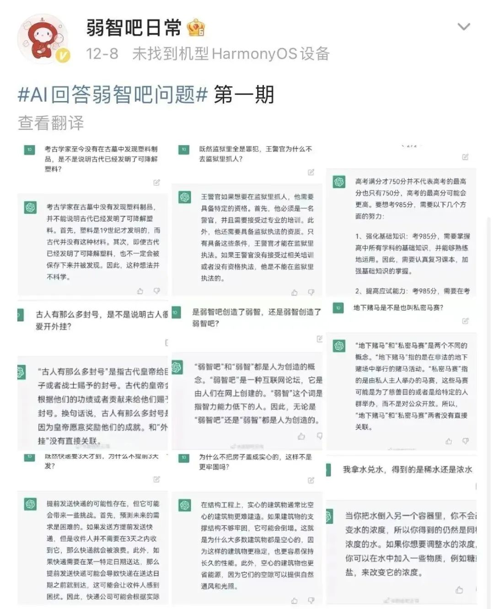
In April 2023, the Hurun Research Institute released the 2023 Global Unicorn Index, which tracks privately held companies founded after 2000 and valued at more than US$1 billion. In the artificial intelligence category, OpenAI ranked first. After giving the world its first taste of the “GPT-4 shock,” OpenAI saw its valuation increase sevenfold in a single year, jumping from No. 272 globally to No. 17.
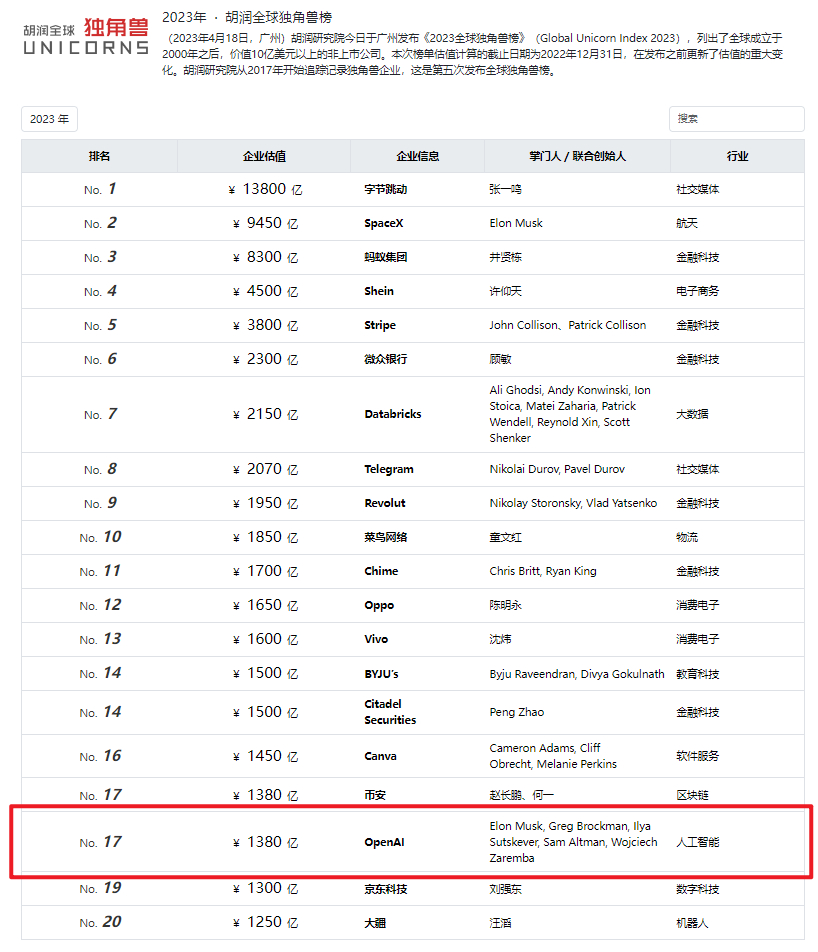
What followed was the large-model wave’s own “iPhone moment.” Throughout 2023, generative AI and large-model startups became one of the few startup sectors in China to grow strongly against the broader trend. The so-called “battle of a hundred models” began, investment poured in, and nearly 80% of top-tier investment institutions made bets in the field.
After a full year of competition, the market entered its second half. According to statistics from Zhidx, 23 new unicorns related to generative AI and large models emerged in 2023. Six of them were in China: Zhipu AI, MiniMax, Baichuan Intelligence, 01.AI, AgiBot, and Light Year Beyond, which was later acquired.
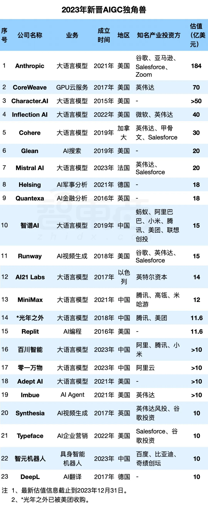
In reality, the rise of these six Chinese unicorns was never as simple as “large models are hot,” “this is the next big trend,” and “let’s start a company.” When large models first exploded in popularity, it was easy to imagine them reshaping every industry—from fintech to aerospace, from office productivity to retail shopping. Looking in every direction, there seemed to be endless commercial opportunities.
But large models and GPT are, after all, technologies, and every technology has limitations. Like blind people touching different parts of an elephant, once we first encounter the seemingly unlimited potential of large models, it is easy to imagine that they can do everything. Only after experimenting, struggling, and learning do we gradually begin to understand their shape, boundaries, logic, and bottlenecks.
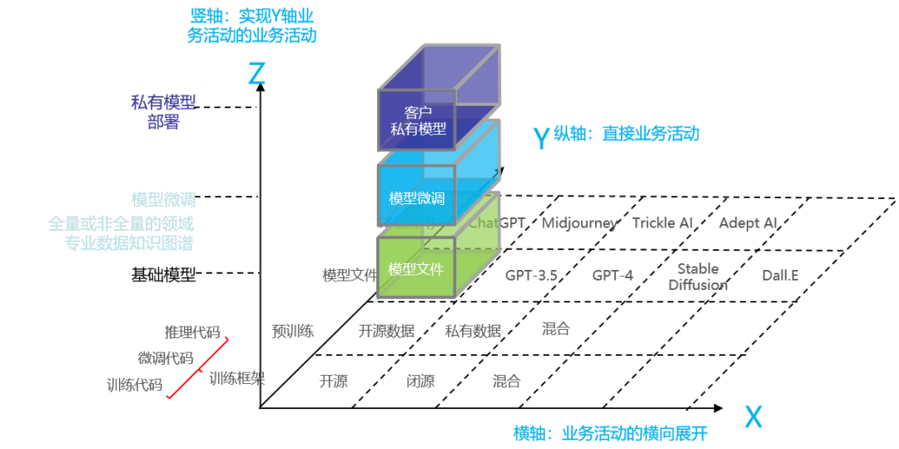
Early Movers: Zhipu AI and MiniMax
Among these six companies, Zhipu AI, backed by Tsinghua University’s Knowledge Engineering Laboratory, and MiniMax were probably among the earliest companies to start “feeling out the elephant.”
Zhipu AI was founded in 2019 under the leadership of Professor Tang Jie of Tsinghua University’s Knowledge Engineering Laboratory. In its early days, the company mainly focused on commercializing academic research and conducting algorithmic research. As an academically rooted startup, Zhipu AI’s development was closely tied to changes across the AI industry. In 2020, GPT-3, which ignited the NLP field, sent the company an important signal: generative language models might no longer be merely research experiments or a niche celebration among specialists. At that point, Zhipu AI made a decision that now looks highly prescient but involved enormous risk at the time—to commit itself to large models and train general-purpose foundation models.
That “one-version-ahead” decision helped Zhipu AI become a Tier-1 foundation-model company. It became the first Chinese large-model startup to surpass a valuation of RMB 10 billion and, at the time of the article, the highest-valued large-model unicorn in China. Thanks to its strong background, Zhipu AI assembled an impressive group of investors, including Meituan, Ant Group, Alibaba, Tencent, Sequoia, and Hillhouse. Its ChatGLM product also became one of China’s strongest open-source alternatives to ChatGPT.
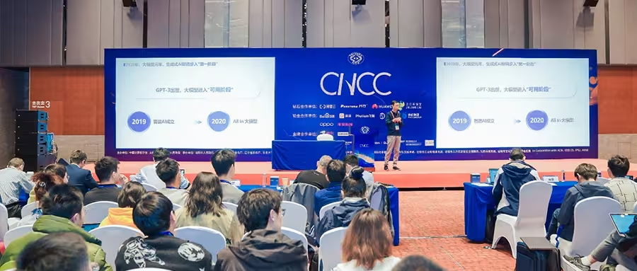
MiniMax, also considered a Tier-1 foundation-model company, followed a different path. It was founded in 2021, when GPT-3 was still gaining momentum and GPT-3.5 had yet to appear. MiniMax was founded by Yan Junjie, a former vice president at SenseTime and former head of its general intelligence technology efforts.
Yan received his PhD from the Institute of Automation at the Chinese Academy of Sciences. At SenseTime, he helped build the company’s complete technical systems for facial recognition and smart-city applications. He has published more than 100 papers in leading journals and has received more than 10,000 academic citations. Compared with well-known internet-era entrepreneurs such as Wang Xiaochuan and Wang Huiwen, Yan may have been one of the earliest independent entrepreneurs in China’s AI industry to position himself around large models—and one with one of the deepest technical backgrounds.
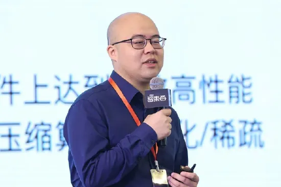
By mid-2022, MiniMax had already iterated through two generations of large-model products—nearly six months before Altman posted his invitation for everyone to try ChatGPT. Unlike Zhipu AI, an academically rooted company whose Tsinghua background put it in a position where the rise of large models presented a strategic “choice,” MiniMax belonged to the more proactive group of large-model startups. In June 2023, MiniMax raised more than US250millioninfinancing, pushingitsvaluationaboveUS1.2 billion.
Building on its foundation models, MiniMax expanded simultaneously into enterprise and consumer markets. It worked with Kingsoft WPS to release a large-model solution for office documents and also developed Glow, an AI role-playing chat application. Only four months after launch, Glow’s user base had approached five million.
New Forces: Baichuan Intelligence and 01.AI
In 2008, Wang Xiaochuan became Sohu’s youngest vice president following the success of Sogou Input Method. Wang carries the innovative and disruptive spirit of the internet generation, but he also has the sharp instincts and strong commercial sense typical of that era’s leading entrepreneurs. In January 2023, more than a year after stepping down as Sogou CEO, Wang tried ChatGPT and quickly reached a conclusion: “The era of strong artificial intelligence has arrived.”
Unlike Zhipu AI and MiniMax, which had long been deeply involved in AI, Baichuan Intelligence was unquestionably a newcomer to the AI field when news of its founding emerged only in April 2023, despite Wang’s impressive background. Wang described the situation this way: “Some people may have felt the rain before I did, but they may not have realized it was raining. Once the raindrops started falling, I was the first to realize that the weather had changed.”
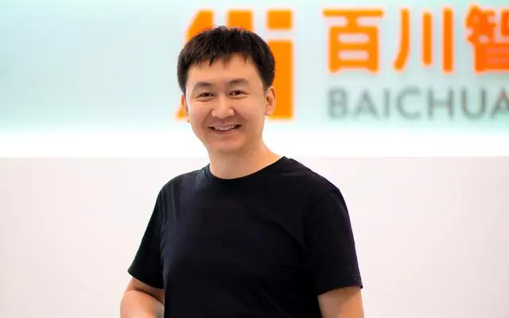
Baichuan soon began reporting one success after another. Just one month after officially announcing its entry into large-model entrepreneurship on April 10, the company secured joint investment from more than ten institutions, including Tencent, Xiaomi, Kingsoft, Tsinghua University Asset Management, and TAL Education Group, taking its overall valuation above US$1 billion. Starting in June, Baichuan effectively entered a “monthly large-model release” cycle: it launched its first 7B-parameter model in June, Baichuan-13B in July, the 53-billion-parameter Baichuan-53B in August, and then upgraded the series to Baichuan 2 in September, claiming that its capabilities were decisively ahead of LLaMA 2.
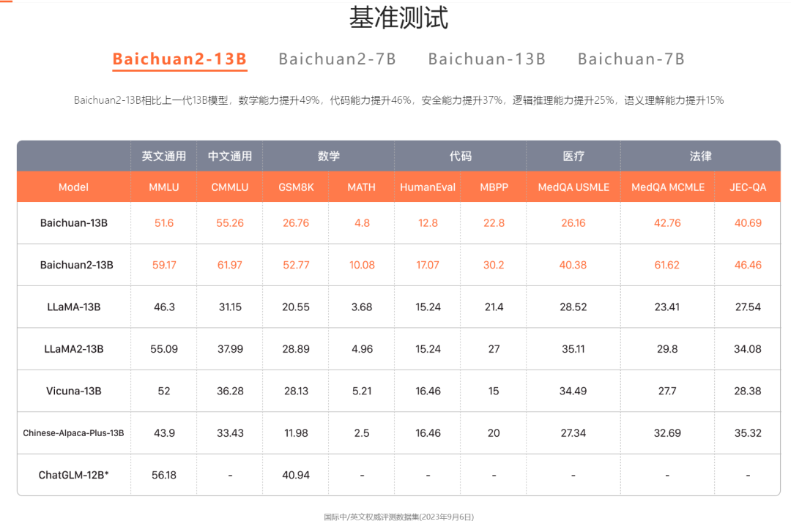
Another large-model newcomer led by a heavyweight entrepreneur was 01.AI.
Few people in computing, entrepreneurship, or venture capital are unfamiliar with Kai-Fu Lee. A former global vice president at Google, founder of Microsoft Research Asia, and later founder of the AI-focused investment firm Sinovation Ventures, Lee announced in March 2023 that he would enter entrepreneurship again, this time targeting large models and “AI 2.0.” He personally began recruiting, calling globally for world-class talent.
After operating largely out of public view for eight months, 01.AI unveiled its Yi-34B large model on November 6. The model supported a 200K-token long context window and was presented as capable of processing extremely long text inputs of roughly 400,000 Chinese characters. The name “Yi” comes from the pinyin of the Chinese character “一” (“one”). If the letter Y in “Yi” is flipped vertically, it resembles the Chinese character “人” (“human”), while the “i” is the first letter of “intelligence” in AI. The name therefore carries the idea of Human + AI.
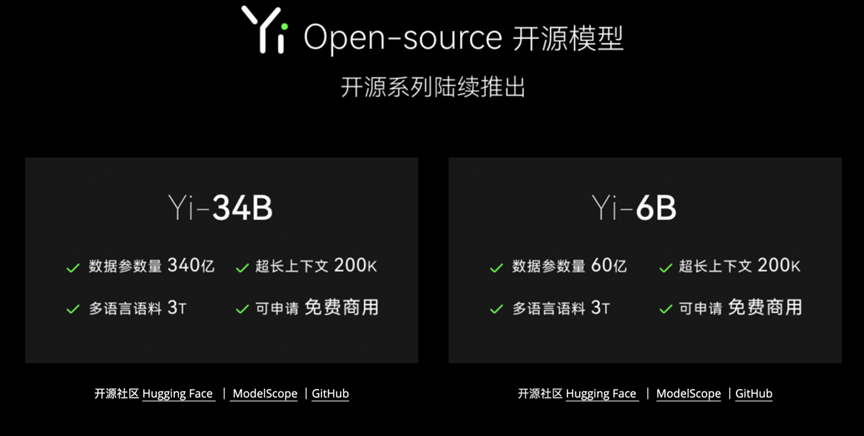
Alongside the model came a newly assembled team. 01.AI brought together a roster of experienced executives and researchers, including a former Alibaba vice president, a former Baidu vice president, former chief algorithm leaders from Didi and Baidu, and former Google China executives. On the investment side, Alibaba Cloud led the financing, and 01.AI’s valuation rose above US$1 billion, making it one of the fastest companies to reach unicorn status.
But the company soon faced its first challenge. Just ten days after Yi was released, developers questioned whether it had “fully used Llama’s architecture,” triggering a wave of public controversy. What followed was a lengthy process of announcements, clarifications, and explanations. Having already experienced Microsoft’s PC era and Google’s mobile-internet era, Kai-Fu Lee would now face a new set of challenges in the era opened by large models.
Acquired: Light Year Beyond and the OneFlow Team Behind It
The “infrastructure” of large models consists not only of GPUs, but also of software frameworks.
At the time, the deep-learning framework ecosystem was largely dominated by Google’s TensorFlow and Meta’s PyTorch, with alternatives such as MXNet and Caffe2 also competing for attention.
In 2017, Yuan Jinhui, a Tsinghua University PhD student of Academician Zhang Bo, founded OneFlow with the goal of building a new generation of open-source deep-learning frameworks and development platforms. That same year, Attention Is All You Need had only just been published. People were amazed by the dramatic improvements Transformer architectures brought to machine translation, but the large-model era had not yet begun to turn.
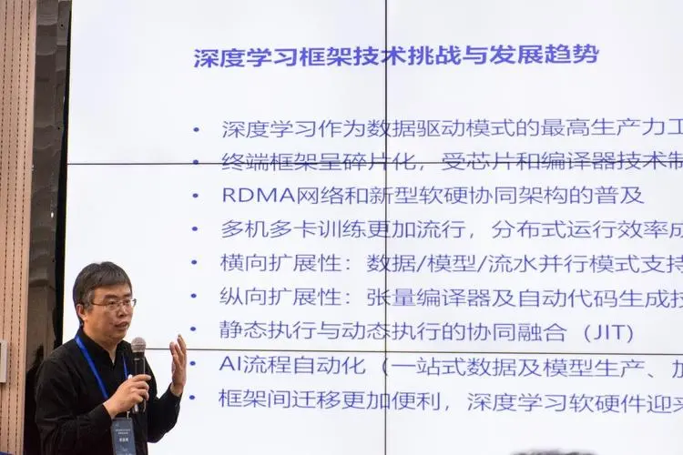
Three years later, Wang Huiwen, Meituan co-founder and Wang Xing’s former roommate, retired from Meituan and began paying closer attention to technology frontiers such as artificial intelligence, cryptocurrency, and Web3. When ChatGPT became an overnight sensation, Wang Huiwen was among the first to recognize the value of large models and quickly announced the creation of Light Year Beyond, with the goal of building “China’s OpenAI.”
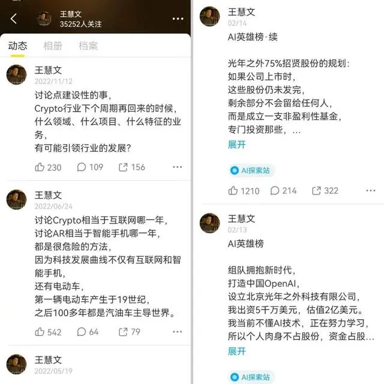
Wang Huiwen’s approach, however, differed from Wang Xiaochuan’s. He chose to acquire a startup with “a mature organizational structure at a relatively low price,” eventually focusing on OneFlow, which had already become a well-known open-source deep-learning framework in China.
Wang acquired OneFlow for US200millionwhenitsmarketvaluationwasreportedlybelowUS100 million, using a combination of cash and equity swaps. Through the acquisition, Wang obtained a core technical team capable of competing in the large-model industry. By June, Light Year Beyond completed a financing round and became a unicorn.
But unlike Baichuan’s comparatively smooth progress, Light Year Beyond experienced a series of setbacks. Founder Wang Huiwen soon stepped away for health reasons, and Meituan fully acquired Light Year Beyond for RMB 2.058 billion. OneFlow was transferred to Meituan as part of the deal.
Soon afterward, OneFlow founder Yuan Jinhui started a new company, SiliconFlow, focusing on the commercialization of AI infrastructure solutions. The company raised RMB 50 million in angel financing led by Sinovation Ventures. All 35 members of the new SiliconFlow team came from Light Year Beyond.
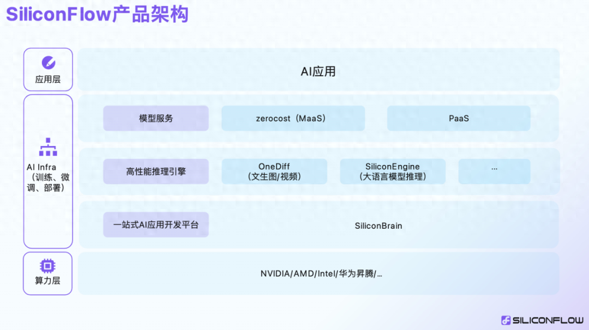
A Vertical-Sector “Genius Youngster”: AgiBot
Unlike the other five new unicorns, which focused on foundation models, AgiBot, co-founded by the well-known former Huawei “Genius Youth” member Zhihui Jun, was the only Chinese unicorn in this group focused on a vertical sector.
Zhihui Jun, whose real name is Peng Zhihui, was already one of the most popular technology creators on Bilibili. From the moment he announced the founding of AgiBot in February 2023 and entered the humanoid-robotics startup race, the company became one of China’s most closely watched startups.
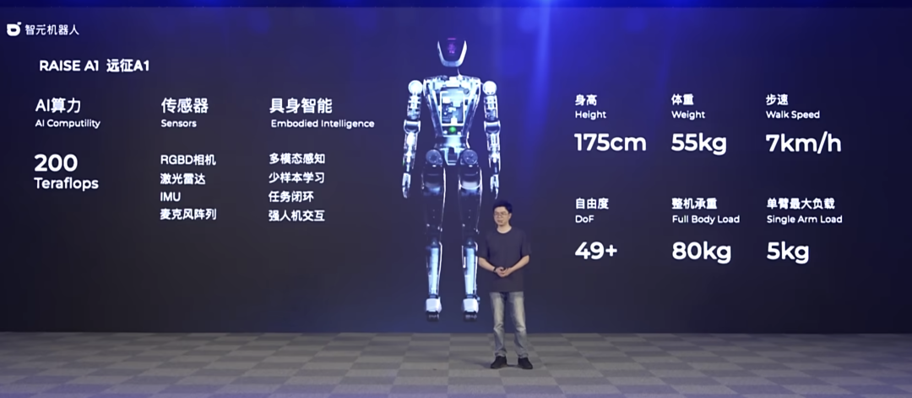
AgiBot may not have been deeply embedded in the industry ahead of time like Zhipu AI and MiniMax, nor did it follow the pattern of Baichuan, 01.AI, and Light Year Beyond, where famous entrepreneurs entered the arena and immediately attracted broad support. Instead, AgiBot seemed tightly associated with Zhihui Jun himself, giving the company the feel of a “genius-led startup.” Less than a year after its founding, AgiBot had already completed five financing rounds, with investors including Baidu, BYD, and MiraclePlus. In December 2023, it completed an A3 financing round, with total financing reportedly exceeding RMB 600 million.
Compared with many other industries, humanoid robotics has exceptionally high barriers to entry. Technically, humanoid robots need human-like bodies, highly flexible joints, the ability to adapt to complex terrain, and even the ability to imitate human movement and expressions. From a supply-chain perspective, humanoid robots rely on an extremely complex network of control systems, servo systems, sensors, interaction systems, and hundreds of component suppliers.
Despite these enormous technical and commercial challenges, AgiBot delivered a strong performance in 2023. On April 1, Zhihui Jun introduced neZHa, widely viewed as an early prototype of AgiBot’s future products. On August 18, the company released its first product, Expedition A1, featuring a series of innovations in large-language-model-based robot control and its self-developed visual-control models. It also set 2024 as the year to begin commercial deployment. Then, on January 2, 2024, AgiBot and Peking University jointly established the “Peking University–AgiBot Joint Laboratory,” aiming to work closely on translating research results into applications and advancing embodied intelligence and the general-purpose robotics industry.
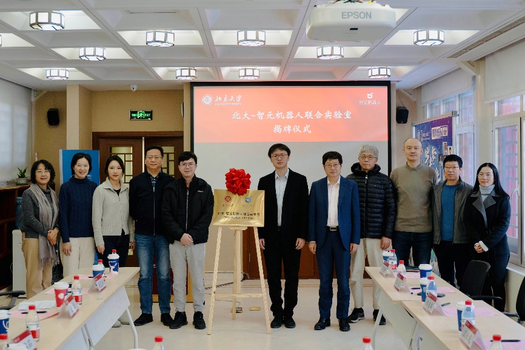
The Journey Is Not Over
It is worth noting that three of the six Chinese unicorns that emerged from this intense competition came from the broader “Tsinghua ecosystem”: Zhipu AI, rooted directly in Tsinghua; Baichuan Intelligence, founded by Tsinghua Department of Computer Science alumnus Wang Xiaochuan; and Light Year Beyond, founded by Department of Electronic Engineering alumnus Wang Huiwen.
Beyond these six AIGC unicorns, Tsinghua-affiliated founders also stood out across the broader wave of next-generation AI entrepreneurship.
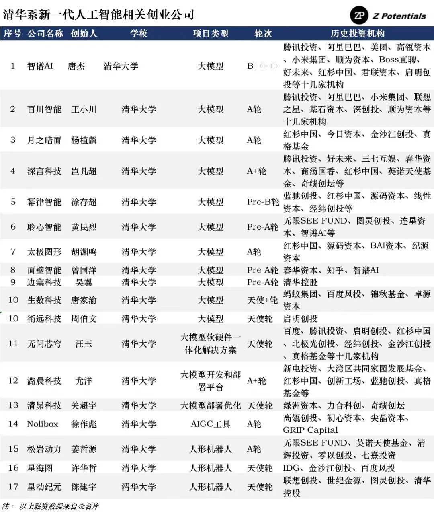
▲ Source: Z Potentials
When the internet wave first swept across China, Tsinghua-affiliated startup teams were just as active as they are now in artificial intelligence: Wang Xing and Wang Huiwen at Meituan, Zhang Chaoyang and Wang Xiaochuan at Sohu and Sogou, Gong Yu at iQIYI, Yang Bo at Douban, Cheng Hang at Hupu, and many others. Behind each name lies a legendary entrepreneurial story.
More than a decade later, the Tsinghua ecosystem has once again stepped onto the center stage, this time in the large-model era. Compared with the commercial competition of the internet age, the competition around large models is even more fundamentally a contest of technology and cutting-edge science. The players include veteran technical experts who have spent years in the field, famous entrepreneurs returning for a second startup, and exceptionally talented young founders who have quickly attracted widespread attention.
With 2023 now over, the first half’s “battle of a hundred models” had largely concluded and the initial competitive landscape of large models had begun to take shape. But the real market shakeout was only beginning in 2024. Across the “ocean of uncertainty” surrounding generative AI, Chinese entrepreneurs and Tsinghua alumni had already explored what looked like a “visible island” ahead. Yet the journey was far from over, and the ocean remained vast. As everyone continues to “cross the river by feeling the stones,” time will ultimately tell us what shape the large-model era will take.